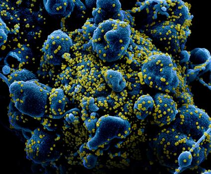

Dexamethasone Improves Survival in COVID-19 — Why This Should Be Practice Changing Even Before the Paper is Published
I wonder how much of this is due to the NIH (not invented here) syndrome?Would people be so cynical if the press release had come from your own institution, for example?
Posted On: 2020-06-22T00:55:00
Posted By: H Wray
Does the 1.22 mortality in less unwell patients, which almost reaches statistical significance not worry you?
Posted On: 2020-06-22T03:12:00
Posted By: Dr James Freeman
Looking forward to seeing the details from this subgroup in the published paper, especially the causes of death to see if they might be dexamethasone-related.
Posted On: 2020-06-22T05:46:00
Posted By: Paul Sax
The 1.22 mortality was more above 1.0 than below (1.22 [0.86 to 1.75]; p=0.14).Maybe using any steroid in 'less unwell' patients is harmful.I think we already know that you don’t give steroids to the healthier patients.That doesn’t detract from the good result; it just tells you when to use it and when not to use it.
Posted On: 2020-06-23T18:15:00
Posted By: Ron Conte
We give steroids for MUCH LESS reason that to 'save lives'!What is the down side?Cheap, effective, known treatment to patients and providers.DUH
Posted On: 2020-06-22T09:34:00
Posted By: Catherine Hamel
Let’s wait peer review.It sounds a little bit strange for me that the mortality benefit was lower in the group that requires only oxygen therapy.
Posted On: 2020-06-22T09:55:00
Posted By: EDUARDO XAVIER Selecione uma Opção POZZOBON
If dex is working to mitigate the profound cytokine response, those with a more limited cytokine response could well not see the same degree of benefit.
Posted On: 2020-06-27T10:38:00
Posted By: Gerry Creager
Great job, Paul!It would have been unethical for the investigators NOT to have issued the press release in advance of publication, and it’s probably also unethical for treating clinicians to ignore it.
Posted On: 2020-06-22T11:25:00
Posted By: Joel Gallant
Absolutely, the right call.Never should the study have continued without getting the news out for those it might save now.Thanks for the work on treatments that are affordable too.All of us won’t get vaccines so this is another option for those that get this disease.
Posted On: 2020-06-27T13:38:00
Posted By: Deborah M Vercammen
Do you think it matters if we use prednisone or methylprednisolone as opposed to dexamethasone?Do you think a weight based dosing makes a difference?
Posted On: 2020-06-22T12:54:00
Posted By: Venkat Ramesh
RECOVERY tested dexamethasone on COVID-19, not other corticosteroids.In a world going head over heels on experimental scientific evidence and not trusting basic clinical judgement and prudence, I would say there is no evidence about use of prednisone or methylprednisolone in COVID-19 and so you must stand in the queue for dexamethasone only.Allow me to mention here that the Indian Council of Medical Research (ICMR) long ago has provided advisory for using methylprednisolone in moderate and severe COVID-19 disease, and it is not only clinically sensible, it is working.ICMR has also advised HCQ use in mild and moderate COVID-19 disease, and THAT is working, too, but that is a sad and tainted issue for reasons none of which are scientific.We are justified in being skeptical about press releases regarding results not backed by release of data.Thanks.
Posted On: 2020-06-23T03:32:00
Posted By: Prof U.K. Bhadra
Hi Paul — Most of the benefit was in the ICU patients, where mortality rate went from 40% to 28%.28% mortality is almost 3x the mortality rate in our hospital!
Our ICU folks generally use methylpred in folks with ARDS (which is most of the covid patients who end up tubed).It could definitely be that we’ve already been seeing the benefit.But just from the raw numbers not sure what to think.
Posted On: 2020-06-22T14:27:00
Posted By: Phil Ponce
3x mortality rate in our covid MICU patients.
Posted On: 2020-06-22T14:28:00
Posted By: Philip Ponce
Any glucocorticoid could be used.The life saving effect of these corticosteroids are not specific for COVID-19.Hans Selye described 70 years ago in his book 'Stress' (Acta Inc.,.Med..Publ.Montreal, 1950) that any stressful condition can elicit a chain of events he called the general adaptation syndrome which has 3 phases:1) the alarm reaction, 2)the stage of resistance and 3) the stage of exhaustion.Stress stimulates the adrenal cortex to secrete excessive amounts of corticosteroids.If the condition reaches the 3rd stage, the adrenal cortex fails and as a result, causes adrenocortical insufficiency and, ultimately, death.The administraion of glucocorticosteroids can save the patient’s life via a non-specific mechanism, irrespective of the underlying disease.I was Selye’s postgraduate student 60 years ago, hence you get it from the horse’s mouth.
Posted On: 2020-06-22T17:42:00
Posted By: Miklos Nadasdi ,M.D.
In the 2400 years of clinical medicine since Hippocrates, most advances in the art and science of medicine were the result of observations and clinical diagnosis.While randomized, double blind prospective studies are the gold standard, sometimes we have to rely on our training and judgment.
Posted On: 2020-06-27T14:31:00
Posted By: Mark
I am not a doctor or scientist; however, doesn’t this information help explain the difference between results in incubated patients and oxygen only patients based on the assumption that incubated patients are far more likely to have reached stress level 3 and therefore are more likely to benefit from supplemental corticosteroids?
Posted On: 2020-06-27T14:48:00
Posted By: D. Thorpe
Or you can read the pre-print: https://www.medrxiv.org/content/10.1101/2020.06.22.20137273v1 !Up quite quickly I must say
Posted On: 2020-06-22T20:10:00
Posted By: Matthew A Spinelli
Nothing really new.Look at the results in 277 patients with ARDS studied in Spain from 2013 to 2018, published in Lancet Respir Med 2020; 8:267-276.
Posted On: 2020-06-23T03:48:00
Posted By: Roberto Esposito
These results are overstated.If non-ventilated patients are considered as a group, irrespective of oxygen use, there were 360 mortality events in 1780 dexamethasone patients (20.2%) and 787 mortality events in 3638 standard care patients (21.6%).(P=0.2427).The benefit of dexamethasone resides in the ventilated patient group in the ICU.
Posted On: 2020-06-23T08:08:00
Posted By: Ralph Hawkins
Is it really EVER necessary to show any P-value to FOUR significant digits?I think not.Every conceivable inference that could be drawn by looking at 0.2427 can be drawn equally as well by looking at P = 0.24 or even P = 0.2
The point is that the contrast in question exceeded a presumed threshold of .05 apparently.The conclusion then is that 'there is not a significant difference'.The contrast would not be judged 'more insignificant' or 'more impressive' by using the value 0.2427 in the Ralph Hawkins note above.
What am I missing here?
Posted On: 2020-06-27T18:16:00
Posted By: James T Lee MD PhF
Looking forward to the details, It would be interesting to find out if dexamethasone was associated with reduced FIO2 requirements with mechanically ventilated patients, as an high FIO2 may cause oxygen toxicity and may exacerbate COVID-19 lung inflammation associate with diffusive alveolar damage (DAD) that may cause increased morbidity and may increase mortality among this patient population.
Posted On: 2020-06-23T11:05:00
Posted By: Sherwin Morgan
acaviness@centurylink.net I understand the predicament you’re witnessing.It makes no sense to not try a logical solution.Unfortunately, standards of care need to be updated for many to believe.I’m in the same situation.The use of povidone iodine nasal spray and mouthwash in low concentrations makes a logical preventative intervention.Few are willing to try it.Clinical trials will end in 2021, probably to late to avert the coming catastrophe this fall.Previous studies of every past serious virus have shown PVP-I to be effective.Safety issues include know allergies to povidone, thyroid issues (née physician monitoring).The literature is available it’s just not being promoted.
Posted On: 2020-06-23T13:31:00
Posted By: William Caviness Rph
In our dermatology clinic, we ask our Mohs surgeons to use 0.5% H2O2 nasal spray twice a day, to decrease the risk of surgeons and patients.0.5 % of H2O2 has been shown to kill the coronavirus effectively.Wonder why no studies have been done on the preventive effect of H2O2 or povidone iodine nasal spray or mouthwash.
Posted On: 2020-06-27T15:04:00
Posted By: Jing Zhang
There is no such thing as 'almost statistical significance'.Either, there is or there is not enough uncertainity to rule out the nule hypothesis.Otherwise, it could be argued that steroids could even prevent mortality given that a fraction of the confidence interval is below one, and the real parameter is there.There is just too much uncertainity with that p-value=0.14.
Posted On: 2020-06-24T20:39:00
Posted By: Dr. Sebastian Nuñez
Our report corroborate that steroids save lives .We communicated this information to NEJM, AJRCCM and Chest but understandably was not published Fortunately is now published by SCCM.
https://journals.lww.com/ccejournal/fulltext/2020/06000/the_combination_of_tocilizumab_and.23.aspx
Posted On: 2020-06-27T10:24:00
Posted By: Munir Hazbun MD
We recently published our experience with 500mg of Methylprednosolone on severe Covid pneumonia on mechanical ventilation with mortality of less than 20% I agree that 40% base line mortality is high but that is the about what NYC and Seattle reported I wonder if a dose higher thatn 6 mg Dexametsone can be more effective for some patients.
Posted On: 2020-06-27T10:53:00
Posted By: Munir Hazbun
For every 8 severely ill COVID-1 patient on invasive mechanical ventilation, one was saved (survived) is a compelling reason, to use Dexametasone.
Posted On: 2020-06-27T11:03:00
Posted By: Raul A Lazarte
Dexamethasone is not the wonder drug that will work wonders.It is NOT an antiviral.It is a steroid that has immunosuppressive and anti-inflammatory activity.What does inflammation have to do with COVID-19 infection.Most COVID-19 infections are mild or asymptomatic in adults below 55.But in infections with all blown symptoms associated with COVID-19, mostly in patients above 55 or those with genetic or acquired immunodeficiencies there is a progression to the next stage of uncontrolled inflammation accompanied by multiple organ inflammatory damage.That is when Dexamethasone could be a life saver.From what we know now that we did not know 4 months ago when COVID-19 was spreading like wild fire is those who were dying were dying not as much from the lung damage due to uncontrolled COVID-19 multiplication and proliferation as much as the inflammation due to proinflammatory cytokines and chemotactic complement components.Any one advocating prescribing Dexamethasone during the early days of COVID-19 infection is making a big blunder.During the early days the immune system needs all the support it can get with antivirals and not be suppressed by something like Dexamethasone which should be more an end stage treatment when oxygen level as seen in an oxymeter fall below 95%.Please my friends be very careful to ensure that the timing and the case justifies administering Dexamethasone.
Posted On: 2020-06-27T11:12:00
Posted By: Girish J Kotwal
I absolutely agree with Dr. Kotwal.I’m no tan expert in infectious/Inflammatory diseases, but for what we have seen in our critically ill pacients, the ones who benefit from corticoesteroids are the ones in late stages of the disease or in the contrary, the ones who have a disproporcionate inflammatory response during the first week of illness; all of them connected to VMI, critically ill, where the lungs showed a characteristic low compliance and you could suspect that an inflammatory response is the most probably cause for this pattern.We also have seen that pacients in these late phases of COVID-19 tend to have bacterial co-infections, so maybe it would be safe to check that possibily before giving corticoesteroids in high doses.The last thing I would like to say is actually a personal question.Why did they choose Dexamethasone and not another corticoesteroid?One would assume that all of them should have the same effect (If used in equipotencial doses) in diminishing the inflammatory response.I apologyze if I my writing has orthographic mistakes (it’s been a while since the last time I wrote in english).Good luck to you all.
Posted On: 2020-06-27T19:17:00
Posted By: Agustín Cáceres Crovetto
I really don’t see the earth shattering news here.We used Solumedrol, an I.V. steroid in the late 1980s and 1990s for almost all patients with PCP before Septra was to take affect .We called it'pharmacological last rites', but then realized that it allowed for respiratory rescue before intubation.This was at the Univ.of Maryland Medical System.Up to 10% of our in patient population had AIDS.PCP was the devastating infection that patients came in with, not even knowing they had AIDS.The lungs were so overwhelmed with PCP, that respiratory failure was sometimes hours away, and intubation and mechanical ventilation did next to nothing except causing barotrauma.It was treating the doctor more than treating the patient.But we found that steroids treated the so called 'cytokine storm', although we didn’t call it that then, just ARDS.As a retired physician sailing my boat around the world, I assumed that steroids would be in the armamentarium for any respiratory failure if a patient is close to 'circling the drain'.I hope it didn’t take 4 months to figure that one out.
Posted On: 2020-06-27T11:20:00
Posted By: Carolyn J. Harrington
You bring back memories.We approached the PCP crisis patients the same way in Houston, and saw some pulled back from the brink… yes, on the order of 10%.What we knew when we started the protocol was we were seeing low impedance overwhelming and atypical pneumonia with a massive 'sepsis' response (cytokine storm).Early in the AIDS outbreak, we didn’t know what we were dealing with and rarely isolated pneumocystis.We treated empirically.High dose steroids, after failure of a serious course of IV antibiotics allowed us to save enough patients to more carefully consider what a treatment course might look like if we could codify it into protocols, which helped.
Posted On: 2020-06-29T08:57:00
Posted By: Gerry Creager
When I was in Don H Nelson’s lab (1969-74) we studied the protective effect of corticosteroids in animals subjected to hypoxic environments.Adrenal steroids were protective.
Roosevelt, TS; Wennhold; and Nelson, DH A Protective Effect of Glucocorticoids in Hypoxic Stress, Am J Physiol 1972 Jul;223(1):30-3
Posted On: 2020-06-27T11:35:00
Posted By: Theodore Roosevelt
I’d forgotten this study.Thanks.
Posted On: 2020-06-29T08:57:00
Posted By: Gerry Creager
TY
Posted On: 2020-06-27T11:54:00
Posted By: Vchokkavelu MD
Great analysis!!Reminds me of my internship in the 1980s when we were using steroids in intubated patients with pneumocystis pneumonia at Elmhurst City Hospital in NY.Saved lives!!Just go with it!I am not surprised with these results
Posted On: 2020-06-27T11:58:00
Posted By: Stuart Saftchick
I am very encouraged by these results and would likely agree to use dexamethasone.However, steroids have a poor track record in sepsis, which is likely what severely ill patients with COVID have.And it is almost never a good idea to stop a study early unless clear negative results are evident.The studies are powered to reach end points and stopping early negates this goal.So I believe with limited options, Dex is a good choice for the most severely ill patients with COVID infections.Just don’t be surprised if these results don’t hold up in subsequent studies.
Posted On: 2020-06-27T12:06:00
Posted By: Tom Ahrens
Important observation, Tom.Stopping before the pre-specified number for analysis is reached often results in a false positive trial.We won’t be able to get the details on this aspect until the trial is published.One wonders if there will be subsequent studies, though.
Posted On: 2020-06-28T15:18:00
Posted By: Steven Q Simpson
A critical thing is to find a marker that tells us when to start immune inhibitors.Giving them too early will probably blunt an effective immune response.Giving them too late will allow undesirable damage.
Posted On: 2020-06-27T12:16:00
Posted By: Pete Cohen
Something that has bothered me right when this was first announced was their non-steroid ventilator group’s mortality was listed 41%.Prior to that, I have not heard of any med center’s ventilator mortality rate anywhere in the world be lower than 85%!
Posted On: 2020-06-27T12:43:00
Posted By: Rob Sepersky MD
Clinical decision making should always involve the patient.Given evolving data and uncertainties, we now know what doesn’t work.We also know what might work.The question is, would your patient desire to take a drug with questionable and possibly promising efficacy or do nothing at all?
Posted On: 2020-06-27T13:23:00
Posted By: Karine Rozenberg ben dror
What I’ve learned from our Covid-19 experience is that the default answer from public health officials is to WAIT.I guess they’re waiting for the FDA to give its unqualified approval for a treatment, even if it does take until 2024 and tens of thousands will die in the meantime.For now, and in my opinion, what we should be using in a hospital setting is Remdesivir, but the FDA’s EUA specifies only for 'severe' cases.Anyone who knows anything about viruses knows that the best time to attack a virus is in the early stages but the FDA has its own (bureaucratic) reasons for waiting, I guess.Doctors with actual patients tend to be more willing to help cure the patients, but they are stymied by officialdom, who tell them to WAIT.In our state we have yet to receive Remdesivir but I understand there may be some use of dexamethasone since it’s so ubiquitous.I understand too there are antiviral sprays for early use being developed by the good scientists at our drug companies, but Heaven forbid we should try these on patients before the official FDA approval years from now.
Posted On: 2020-06-27T14:51:00
Posted By: Alex Schuettenberg
What I have learned from COVID-19 is that doctors are willing to grasp at straws in the name of 'treating' patients that they don’t understand.How many people died from receiving hydroxychloroquine (HCQ), rather than from their COVID?Likewise, HCQ + azithromycin and/or zinc?We will never know, because so many people rushed in and gave those things to patients without adequate evidence to back them up.All in the name of 'saving lives'.Science is the reason we live in the technological world we live in.Clinical science is the only hope for patients.Public health officials are right to let science work this out.
Posted On: 2020-06-28T15:25:00
Posted By: Steven Q Simpson
The ventilated patients treated with steroids experienced a a mortality of roughly.30% compared with the non treated ventilated patients who experienced.a mortality of 40%.This is not a 33% reduction in mortality.It is a 10% reduction in mortality.Not a 33% reduction in mortality.You dont achieve.a 33% reduction in deaths.If you did.the treated.group would have experienced a 10% mortality.THis kind of reporting is misleading to the public and the media.If there is a 2% chance I get bitten by a snake walking in the dessert in the summer versus a 1% chance in the winter, I do not.reduce my chances of getting bitten by 50% but by 1%.Absolute versus relative reduction.Absolute.is what is meaningful to hikers.Should be the same for patients.Of those who were not treated with steroids due to concern by their physician that the treatment would be 'harmful', we need to know the outcome of these patients.What was their mortality?
Posted On: 2020-06-27T15:09:00
Posted By: william reichert
Having attended for years the meetings of the monitoring committees for the UKPDS, DCCT, and DPP, it is very hard for me to imagine an independent data monitoring and review committee allowing the trial to continue in the face of a significant reduction in mortality.I agree in releasing the information prior to peer review and publication, because of the real possibility of saving lives.I am curious, though, whether the analysis of the benefit in the ventilator patients was a subgroup analysis of the intention to treat study cohort.
Posted On: 2020-06-27T15:31:00
Posted By: Richard C. Eastman M.D.
I find it strange that there’s no FDA Approved CoVid test but yet they moving warp speed on a vaccine?
Posted On: 2020-06-27T16:01:00
Posted By: Scott
My first and foremost comment I look for every time I read a study – Was it double blind?Morality does not seem to be an endpoint that would be biased if not double blinded but I think double blinding really makes a study.We are all consciously or unconsciously hoping we can find a meaningful contribution.It affects how we select patients, how we treat patients, how we record what happens to patients – if we are not blinded from the process we use and outcome we desire.Just asking.Please tell me it was totally double blinded.
Posted On: 2020-06-27T16:01:00
Posted By: Daniel Dziedzic
Sometimes, when you’re confronted by a disease process that’s 'novel' and exhibits a mortality higher than you… or the world is comfortable with, you fall back to observational studies, or even clinical judgement.Fully double-blinded RCTs are, of course, the gold standard but when you’re on the leading edge, you improvise.Things you have already tried, that are standards of care in other cases that appear similar, don’t work, and you’re seeing too much death that you believe should be preventable.If we had the time, to wait for the fully blinded RCTs with solid results, that would be great.But, at what cost in patient mortality?And, how often are double-blinded studies terminated early for lack of effect, or carried to conclusion without proving their hypothesis?
Posted On: 2020-06-29T09:09:00
Posted By: Gerry Creager
Must wonder why response to dexamethasone was so profound versus that observed anecdotally in other studies of methylprednisolone.Understandably, the latter has not undergone such rigorous testing in covid patients.Do pharmacologic properties (fluorinated status, higher concentration in alveolar fluid, intensity of glucocorticoid activity of dex.,other?)weigh significantly of this surprising clinical response?
Posted On: 2020-06-27T21:16:00
Posted By: chase
I wonder whether there is a rationale for assessment of a sequential treatment with convalescent plasma as early as possible in COVID pneumonia, followed by DEX in those in whom the disease progresses until the need for ventilatory support
Posted On: 2020-06-28T03:04:00
Posted By: COSIMO ROBERTO RUSSO
Our experience with Methylprednosolone in 21 patients (now over 60) with severe Covid19 has been reported still with favorable results https://journals.lww.com/ccejournal/fulltext/2020/06000/the_combination_of_tocilizumab_and.23.aspx
We need to realize the RCTtake time and money We need to find a way to use agregate data from ( 'anecdotal') centers work UK has a nationalized health system and used data of over 10K patients
Posted On: 2020-06-28T08:18:00
Posted By: Munir Hazbun
I had been trying to reach a top doctor for about 3 months to use corticosteroids for COVID-19, so I’m so happy we may actually, although way later than should have happened, begin to see that treatment being used.Thank you for your sensible and very useful presentation.But, the corticosteroid Rx should not wait for desperation cases on ventilators.It should be prescribed for any COVID-19 patient with persisting shortness of breath, even if not hospitalized, or if hospitalized but not yet in ICU.I’ve been an MD for 59 years, so I know a thing or two since I’ve seen a thing or two.Patient health results ranks first.Nothing else has any ranking.
Posted On: 2020-06-28T16:43:00
Posted By: Edward Marshall MD
It’s a known physiological fact that Adrenal Cortex goes into overdrive in Acute Stress.If a person comes to know he has COVID infection, he or she is already in acute stress not knowing what the outcome may be.And when dyspnoea sets in the stress levels increase more.Adrenals will go into further overdrive leading to Adrenal fatigue.Our own bodies stress hormones will start to fall leading to more inflammation of endothelium of blood Vessels and alveoli.This will lead to exudate in alveoli and thrombus formation in blood vessels – vasculitis and alveolitis, which had already been initiated by the infection.So giving external steroids will help the adrenals to recover from fatigue and the steroids in its part help reduce inflammation.Acute dosage for short term usage of steroids will not cause immunosuppressive effect.
Posted On: 2020-06-29T04:53:00
Posted By: Dr Subhashchandra Shah
The media and most medical journals are ignoring the work of a group of US clinicians who have been successfully using Methylprednisolone to save the lives of Covid-19 patients.
This distinguished group of clinicians have come together to form the Frontline Covid-19 Critical Care Alliance.They are using the MATH+ protocol whose core elements are Methylprednisolone, high dose IVC, thiamine and heparin.
Dr.Joseph Varon, is Chief of Clinical Care at the United Memorial Medical Center in Houston, TX.Dr. Varon has been using the MATH+ treatment solution from the Covid Unit of one of America’s latest Corona Virus epicenters.In an interview with the Journal of Modern Healing Dr. Varon has commented:
'The virus is very unique and what we’re seeing now, the severity of illness for us is increasing from all these mass gatherings… but also the people‐‐ they don’t give too much attention to the virus.By the time they come to us, it’s often too late.MATH+ works beautifully when you start early.So the sooner I can start you off, the better off you are!'
Posted On: 2020-06-29T08:16:00
Posted By: dylan murphy
Dr Sax, I worry that we do not have information (at least not yet available) of the impact of immune plasma on the outcome of this patients.If there is benefit as others have reported, are the benefits of dexamethasone still evident?Is dexamethasone better than plasma plus no other treatment (or any of the other treatments shown to be non-effective)?Is dexamethasone plus immune plasma better than immune plasma alone?Is 28 days enough to evaluate for secondary infections (bacterial, fungal, VAP/CLABSI/UTI)?If immune plasma (or remdesevir) offer similar benefit, is dexamethasone still indicated?Should it replace these other treatment modalities or used only when these are not available or added to these?I think many questions remain to better understand the role and potential risks of this treatment modality.
Posted On: 2020-06-29T13:15:00
Posted By: antonio arrieta
Tue.But other things matter including the intensity of standard of care and appropriate dose.
Also mechanical ventilation is an endpoint with truly compound heterogeneous pathways.We are awaiting data by presence and severity of ARDS.
With respect to cytokine storm (or tornado), it may induce emotional reactions when sometimes the best thing is to pause and assess the pathological mechanisms of clinical deterioration.
Posted On: 2020-07-04T11:11:00
Posted By: Nadim Salomon
WHY DEXAMETHASONE and not i-v methylprednisolone ?Since CoV attacks not only the epithelial cells (resp tract, kidney, gastro-intestinal tract) but also the ENDOTHELIAL cells, which is responsible for the diffuse microangeiitis with endothelial dysfunction, DIC, micro- macrothrombosis and cause ischemic lesions in the heart and brain methylprednisone which does NOT readily cross de Blood Brain Barrier whould have NO protective effetc on the cerebral lesions of COVID.Dexamethasone DOES readily cross the BBB, attenuate the endothelial inflammation, diminish cerebral edema and intracranial pressure, only DEXAMETHASONE should be applied.In patient with less drammatic clinical presentation.corticosteroids coul facilitate viral replication and attenuate a functioning immunologic response.
Posted On: 2020-07-16T21:38:00
Posted By: de Clari M.D.

Content Date: 2020-06-22
Download Date: 2021-06-20
Document ID: L0C04CWT6